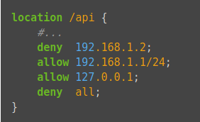
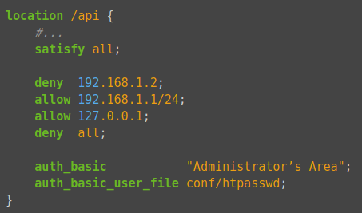

Práctica 3.3 – Autenticación
Autenticación en Nginx
Requisitos antes de comenzar la práctica
Atención, muy importante antes de empezar
- La práctica de creación de sitios virtuales en Nginx ha de estar funcionando correctamente
- No empezar la práctica antes de tener esa práctica funcionando y comprobada
En el contexto de una transacción HTTP, la autenticación de acceso básica es un método diseñado para permitir a un navegador web, u otro programa cliente, proveer credenciales en la forma de usuario y contraseña cuando se le solicita una página al servidor.
La autenticación básica, como su nombre lo indica, es la forma más básica de autenticación disponible para las aplicaciones Web. Fue definida por primera vez en la especificación HTTP en sí y no es de ninguna manera elegante, pero cumple su función. Más adelante en este curso ya veremos otras formas de autenticación, como el uso de un servidor LDAP.
Este tipo de autenticación es el tipo más simple disponible pero adolece de importantes problemas de seguridad que no la hacen recomendable en muchas situaciones. No requiere el uso ni de cookies, ni de identificadores de sesión, ni de página de ingreso.
Preparando el entorno
En esta práctica vamos a proveer de autenticación a una página web completa o a una parte de ella. Para ello necesitaremos una página web con varias partes creada en nuestro servidor.
Partiremos del estado de la práctica anterior y trabajaremos sobre el sitio web "sitio1", que recuerda se encuetra en /var/www/sitio1 y que pertenece a "usuario1". Por tanto, entra como "usuario1" antes de hacer los pasos siguientes.
Crea junto a tu fichero index.html un directorio nuevo y llámale intranet. Dentro haz una copia de index.html y modifica el contenido del encabezado < h1 > para que diga "Intranet".
Ya puedes dejar de trabajar con "usuario1" y volver a ser usuario administrador.
Accede desde el navegador de tu equipo a la nueva página y comprueba que accedes correctamente.
http://sitio1/intranet
Atención
Recuerda que habrás de modificar el fichero /etc/hosts en Linux o en Windows C:\Windows\System32\drivers\etc\hosts del equipo en el que estés usando el navegador.
O también puedes lanzar chrome con el comando: google-chrome --host-resolver-rules="MAP sitio1 IPSERVER" --ignore-certificate-error
Creando el fichero de passwords
Para esta práctica podemos utilizar la herramienta htpasswd para crear las contraseñas. Dicha herramienta se encuentra en el paquete apache2-utils así que lo primero será instalarlo
Crearemos un archivo oculto llamado “.htpasswd” en el directorio de configuración /etc/nginx donde guardar nuestros usuarios y contraseñas (la -c es para crear el archivo) e incluiremos es primer usuario y contraseña para el usuario "profe":
Te pedirá introducir la contraseña y repetirla. Ponle también "profe" para no olvidarla.
Comprueba la existencia y contenido del archivo creado.
Para el resto de usuarios usaremos la misma orden, pero sin "-c" ya que el fichero ya existirá.
- Crea dos usuarios, uno con tu nombre y otro con tu primer apellido
- Comprueba que el usuario y la contraseña aparecen cifrados en el fichero:
Configurando el servidor Nginx para usar autenticación básica
Inicialmente vamos a hacer que se requiera autenticación para acceder a toda la página web "sitio1"
Editaremos la configuración del server block sobre el cual queremos aplicar la restricción de acceso. Utilizaremos para esta autenticación el sitio web de sitio1:
Info
Recuerda que un server block es cada uno de los dominios (server {...} dentro del archivo de configuración de alguno de los sitios web que hay en el servidor.
Debemos decidir qué recursos estarán protegidos. Nginx permite añadir restricciones a nivel de servidor o en un location (directorio o archivo) específico. Para nuestro ejemplo, vamos a proteger el root (la raíz, la página principal) de nuestro sitio.
Utilizaremos la directiva auth_basic dentro del location y le pondremos el nombre a nuestro dominio que será mostrado al usuario al solicitar las credenciales. Por último, configuramos Nginx para que utilice el fichero que previamente hemos creado con la directiva auth_basic_user_file :
server {
listen 80;
listen [::]:80;
root /var/www/sitio1;
index index.html index.htm index.nginx-debian.html;
server_name sitio1;
location / {
auth_basic "Área restringida";
auth_basic_user_file /etc/nginx/.htpasswd;
try_files $uri $uri/ =404;
}
}
Una vez terminada la configuración, reiniciamos el servicio para que aplique nuestra política de acceso.
Probando la nueva configuración
Cuidado
Si usáis el mismo navegador que antes de activar la autenticación de sitio1, es muy probable que no os pida autenticaros porque os mostrará la página en caché local.
Igualmente, una vez os autenticáis con éxito, el navegador guardará esta autencación exitosa y no volverá a pediros usuario/contraseña.
Así pues, para cada prueba, si queréis volver a probar a autenticaros, tendréis que abriros una Nueva ventana privada o Nueva ventana de incógnito del navegador.
Realiza las siguientes pruebas:
Comprobación 1
Comprueba desde tu máquina física/anfitrión que puedes acceder a http://sitio1 y que se te solicita autenticación
Comprobación 2
Comprueba que si decides cancelar la autenticación, se te negará el acceso al sitio con un error. ¿Qué error es?
Comprobación 3
Comprueba desde tu máquina física/anfitrión que ocurre al intentar acceder a http://sitio1/page2.html y http://sitio1/page3.html. Recuerda, inténtalo cada vez en una ventana de incógnito nueva
Tareas
Tarea 1
-
Intenta entrar primero con un usuario erróneo y luego con otro correcto. Puedes ver todos los sucesos y registros en los logs access.log y error.log
-
Comprueba los logs donde se vea que intentas entrar primero con un usuario inválido y con otro válido. Busca dónde podemos ver los errores de usuario inválido o no encontrado, así como donde podemos ver el número de error que os aparecía antes
Autenticación de una parte de la web
Cuando hemos configurado el siguiente bloque:
location / {
auth_basic "Área restringida";
auth_basic_user_file /etc/nginx/.htpasswd;
try_files $uri $uri/ =404;
}
La autenticación se aplica al directorio o archivo que le indicamos en la declaración del location y que en este caso el raíz /.
Así pues, esta restricción se aplica al directorio raíz o base donde residen los archivos del sitio web y que es:
Y a todos los archivos que hay dentro, ya que no hemos especificado ninguno en concreto.
Ahora bien, vamos a probar a aplicar la autenticación solo a una parte de la web, en este caso a "intranet".
Tarea 2
Borra las dos líneas que hacen referencia a la autenticación básica en el location del directorio raíz. Tras ello, añade un nuevo location debajo con la autenticación básica para el directorio /intranet únicamente.
Warning
Fijáos que debéis tener cuidado porque la última línea del archivo ha de ser } que cierra la primera línea server { del archivo.
Comprueba ahora que si accedes a la página principal no te solicita autenticación, pero si intentas acceder a la "intranet" si te la solicita.
Combinación de la autenticación básica con la restricción de acceso por IP
La autenticación básica HTTP puede ser combinada de forma efectiva con la restricción de acceso por dirección IP. Se pueden implementar dos escenarios:
-
Un usuario debe estar ambas cosas, autenticado y tener una IP válida
-
Un usuario debe o bien estar autenticado, o bien tener una IP válida
Veamos cómo lo haríamos:
-
Como permitir o denegar acceso sobre una IP concreta (directivas allow y deny, respectivamente). Dentro del block server o archivo de configuración del dominio web, que recordad está en el directorio sites-available:

El acceso se garantizará ala IP
192.168.1.1/24, excluyendo a la dirección192.168.1.2.Hay que tener en cuenta que las directivas allow y deny se irán aplicando en el orden en el que aparecen el archivo.
Aquí aplican sobre la
location /api(esto es sólo un ejemplo de un hipotético directorio o archivo), pero podrían aplicar sobre cualquiera, incluida todo el sitio web, la location raíz/.La última directiva
deny allquiere decir que por defecto denegaremos el acceso a todo el mundo. Por eso hay que poner los allow y deny más específicos justo antes de esta, porque al evaluarse en orden de aparición, si los pusiéramos debajo se denegaría el acceso a todo el mundo, puesto quedeny allsería lo primero que se evaluaría. -
Combinar la restricción IP y la autenticación HTTP con la directiva satisfy.
Si establecemos el valor de la directiva a “all”, el acceso se permite si el cliente satisface ambas condiciones (IP y usario válido). Si lo establecemos a “any”, el acceso se permite si se satisface al menos una de las dos condiciones.

Vamos a probar lo anterior. Para ello deberermos obtener, en primer lugar, la IP desde la que le llegan las peticiones a nuestro servidor nginx cuando pedimos una página web. Lo puedes obtener desde el archivo le log de nginx
Una vez obtenida la IP, puedes hacer las tareas siguientes
Tareas y cuestiones finales
Tarea 1
Configura Nginx para que no deje acceder con la IP de la máquina anfitriona al directorio intranet. Modifica su server block o archivo de configuración. Comprueba como se deniega el acceso.
-
Muestra la página de error en el navegador
-
Muestra el mensaje de error de error.log
Tarea 2
Configura Nginx para solo se pueda acceder a intranet desde tu máquina anfitriona y se tenga que tener tanto una IP válida como un usuario válido, ambas cosas a la vez, y comprueba que sí puede acceder sin problemas.
Responde a las siguientes cuestiones.
Cuestión 1
Supongamos que yo soy el cliente con la IP 172.1.10.15 e intento acceder al directorio web_muy_guay de mi sitio web, equivocándome al poner el usuario y contraseña. ¿Podré acceder? ¿Por qué?
Cuestión 2
ask "Cuestión 1"
Supongamos que yo soy el cliente con la IP 172.1.10.15 e intento acceder al directorio web_muy_guay de mi sitio web, introduciendo correctamente usuario y contraseña. ¿Podré acceder?¿Por qué?
Cuestión 3
Supongamos que yo soy el cliente con la IP 172.1.10.15 e intento acceder al directorio web_muy_guay de mi sitio web, introduciendo correctamente usuario y contraseña. ¿Podré acceder?¿Por qué?
Cuestión 4
A lo mejor no sabéis que tengo una web para documentar todas mis excursiones espaciales con Jeff, es esta: Jeff Bezos y yo
Supongamos que quiero restringir el acceso al directorio de proyectos porque es muy secreto, eso quiere decir añadir autenticación básica a la URL:Proyectos
Completa la configuración para conseguirlo:
Autenticación en Apache2
La gran mayoría de servidores web permiten la instalación de módulos para ampliar sus funcionalidades. Tener funcionalidades en forma de módulo permite adaptar mejor el consumo de recursos del servidor web a nuestras necesidades (el servidor web solo cargará y ejecutará los módulos que como administradores tenemos instalados y configurados).
El servidor web Apache HTTP Server permite añadir funcionalidades adicionales a las que nos ofrece su configuración básica en forma de módulos instalables. La autenticación es una de dichas funcionalidades. Veamos cómo aplicar una autenticación básica equivalente a la que usamos anteriormente en Ngnix.
Recuperaremos nuestra EC2 en AWS que denominamos "servidorApache" y en la que configuramos 2 sitios virtuales.
En primer lugar vamos a crear el directorio "intranet" en "sitio1" con un fichero index.html en su interior. Comprobaremos su buen funcionamiento.
Y a continuación crearemos el fichero htpasswd como hicimos anteriormente para Nginx y crearemos el usuario "profe" con password "profe". Ten en cuenta que ahora la ruta del fichero debe cambiar.
Ahora vamos a configurar las directivas en el fichero de configuración del sitio1: ls /etc/apache2/sites-available/sitio1.conf:
<VirtualHost *:80>
ServerName sitio1
DocumentRoot /var/www/sitio1
<Directory /var/www/sitio1>
AllowOverride All
Require all granted
</Directory>
<Directory /var/www/sitio1/intranet>
AuthType Basic
AuthName "Intranet"
AuthBasicProvider file
AuthUserFile /etc/apache2/.htpasswd
Require valid-user
</Directory>
</VirtualHost>
Veamos las directivas aplicadas:
-
AuthType: indica que el tipo de autenticación es básica (en lugar de digest que implica comunicaciones cifradas).
-
AuthName: declara el "reialme" al cual pertenece el recurso restringido. Esto permite que si hay otros recursos restringidos asociados a este "reialme" el usuario que ya se ha autenticado en uno de ellos no lo tenga que hacer en los otros. El nombre del reino lo pone el administrador web.
-
AuthBasicProvider: indica el método de autenticación que se tiene que usar. Puede tomar valores tipos ldap, pam, dbm, bdb, file y otros. El valor file significa que se utilizará un fichero de usuarios.
-
AuthUserFile: indica cuál es el fichero que contiene las cuentas de los usuarios locales del servidor Apache. Es el fichero que hemos creado con los usuarios.
-
Require: esta directiva es la que determina cuál es la autorización que se tiene que hacer. En el ejemplo se permitirá el acceso a los usuarios presentes en el fichero .htpasswd.
Vamos a reiniciar el servicio y comprobar que funciona la restricción de acceso aplicada.
Probablemente no has tenido que hacer nada más porque los módulos de autenticación de apache están activados por defecto. Como dijimos antes Apache usa módulos para poder activar y desactivar funcionalidades. La instalación de los módulos se hace mediante ficheros guardados en 2 directorios:
/etc/apache2/mods-available/. Tiene 1 ó 2 ficheros por módulo- Fichero .load - Contiene la directiva para cargar el módulo
- Fichero . conf - Contiene las directivas de configuración del módulo (no todos los módulos lo tienen)
/etc/apache2/mods-enabled/. Los módulos se activan mediante un enlace simbólico en esta carpeta a cada uno de los ficheros en la carpeta/etc/apache2/mods-available/
Comprueba ambas carpetas y cómo hay muchos más módulos disponibles que activados:
¿Y cuáles son los módulos que permiten la autenticación que hemos usado? Usamos 3 módulos, cada uno de los cuales tiene una funcionalidad- Tipo de autenticación: Puede ser "basic" o "digest". Los módulos son auth_basic y auth_digest. Comprueba cómo ambos módulos están instalados (están presentes en
/etc/apache2/mods-available/) pero solo la básica está activada (existe el enlace simbólico en/etc/apache2/mods-enabled/) - Proveedor de autenticación: indica cuál es el mecanismos parar autenticar usuarios. Puede ser un fichero local authn_file o LDAP authnz_ldap entre otros.Comprueba nuevamente cuál está activada y cuál no.
- Autorización: indica si la autorización de acceso a los recursos se hace a nivel de usuarios authz_user, ldap authz_ldap, etc
Para activar y desactivar módulos se usan unos comandos que se encargan de crear o eliminar los enlaces simbólicos.
Así, si alguno de los módulos anteriores no estuvieran activos los podríamos activar con:
Recuerda que después de cada activación deberíamos reinicial el servidor con:
Dockerización
Para dockerizar un servidor Nginx o Apache2 con autenticación usaríamos las mismas estrategias que ya conocemos y que vimos en las prácticas de instalación y creación de servidores virtuales.